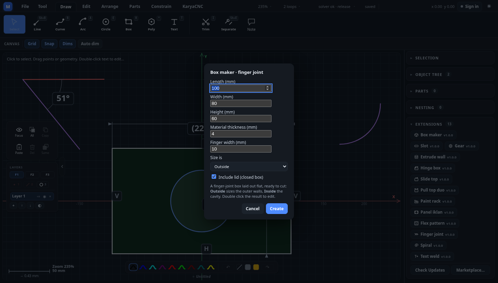

Panel Extensions — Generator Parametrik & Clone
Ke-13 alat generator parametrik bawaan kini tampil di panel Extensions di bagian bawah sidebar kanan bersama ekstensi tambahan Anda. Anda tidak perlu menggambar kotak sambungan atau gigi roda satu per satu dari nol — isi ukurannya, lalu generator membuatkan panel siap potong beserta kerf dan tanda lem otomatis. Lihat halaman Extensions & Marketplace untuk cara menambah, mengelola, dan menerbitkan ekstensi baru.

Dobel-klik untuk edit ulang: hampir semua hasil generator disimpan sebagai grup parametrik. Klik ganda hasilnya di kanvas untuk membuka dialog parameter dengan nilai terakhirnya, ubah ukuran, lalu bangun ulang di posisi yang sama.
1. Daftar 13 Generator Parametrik
| Alat | Syarat Seleksi | Fungsi & Hasil |
|---|---|---|
| Box maker | Tidak perlu seleksi | Membuat 6 panel kotak finger joint (bawah, tutup, 4 dinding) dengan ukuran inside/outside, tebal bahan, lebar tab, dan kompensasi kerf. |
| Hinge box | Tidak perlu seleksi | Kotak 6 panel dengan engsel knuckle bulat di sudut samping dan slot tegak di dinding depan/belakang; tutup dilengkapi coakan buka. |
| Slide top | Tidak perlu seleksi | Kotak 8 panel dengan tutup geser: 4 dinding finger joint + 2 rel samping + tanda lem merah untuk membuat alur tutup geser. |
| Pull top duo | Tidak perlu seleksi | Kotak dengan dua tutup geser ganda yang ditarik berlawanan arah, lengkap dengan klip penahan, pegangan jari, dan tanda lem merah. |
| Extrude wall | Pilih loop tertutup | Mengubah bentuk loop tertutup (mis. huruf/logo) menjadi set flat-pack: alas bertakik, tutup, plug tutup, dan strip dinding ber-living hinge otomatis di area lengkung (radius ≥ 25 mm memakai finger tab). |
| Flex pattern | Tidak perlu seleksi | Membuat pola living hinge mandiri sesuai Length (arah tekuk) × Width (sumbu lipat), baik dua kolom saling mengunci maupun sisir tunggal. Dimensi pada garis hijau bisa diubah dan diputar bebas. |
| Finger joint | Pilih 1 garis atau lebih | Menambahkan deretan tab male atau female langsung pada garis gambar Anda. Grup terikat ke garis master — menggeser/memperpanjang garis akan menghitung ulang jumlah tab saat dilepas. |
| Slot | Pilih garis/kurva/busur/lingkaran | Mengubah garis jalur menjadi lubang slot memanjang dengan diameter ujung tertentu; lengkungan kurva tetap halus. |
| Gear | Tidak perlu seleksi | Membuat spur gear, rack, atau pulley berlapis (N lapis bodi + 2 flens + lubang as + baut pengunci). |
| Spiral | Tidak perlu seleksi | Membuat jalur potong spiral Archimedes mulai dari lingkaran dalam (aman untuk pierce awal) ke diameter luar, mendukung mode pitch/putaran dan multi-start (lengan berselang-seling). |
| Paint rack | Tidak perlu seleksi | Rak penyimpanan botol cat bertingkat dengan kisi lubang otomatis dan dinding samping berslot siap potong. |
| Panel iklan | Tidak perlu seleksi | Bidang papan nama/iklan bersudut membulat lengkap dengan lubang baut pen (4 sudut, 2 kiri-kanan, atau 2 atas-bawah). |
| Text weld | Pilih loop tertutup yang saling tumpang-tindih | Menyambung huruf atau bentuk tertutup di posisinya menjadi satu bagian cut hitam dan otomatis memberi garis merah drill/gores di satu sisi pertemuan. |
2. Array & Live Clone
| Fitur | Keterangan |
|---|---|
| Array (ribbon Edit / panel Tools) | Menggandakan pilihan (termasuk teks, hasil trace, atau grup tool) dalam susunan Grid (baris × kolom) atau On Guide Line (mengikuti garis/kurva bantu hijau). Jika master diedit, seluruh clone ikut berubah. Dobel-klik array untuk ubah jumlah/jarak atau klik → Curve untuk memutus hubungan. |
| Clone (Ctrl+L) | Membuat salinan live dari objek terpilih. Mengedit master akan mengubah semua clone, sementara posisi/rotasi/skala tiap clone tetap bebas. |
| Clone as nest parts (Ctrl+Shift+L) | Memecah objek terpilih menjadi bagian-bagian siap susun (sama seperti dekomposisi Nesting) dan meletakkan satu live clone per bagian di sebelah kanan untuk ditata manual dengan Drag wall (W). |
Tips pemula: untuk membuat teks sambung akrilik (Text weld), buat objek teks (T), kecilkan nilai Letter di bawah 100% (mis. 80–90%) atau pilih opsi
→ Curve lalu geser huruf hingga saling bersentuhan, kemudian pilih semua loop huruf dan klik Text weld.